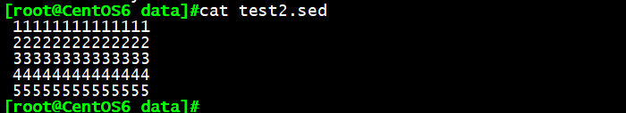
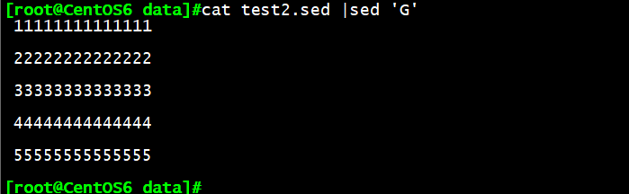
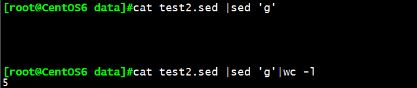
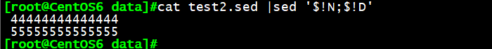
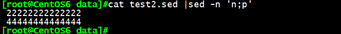
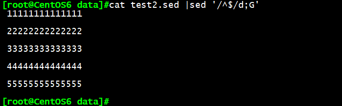
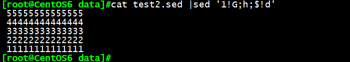
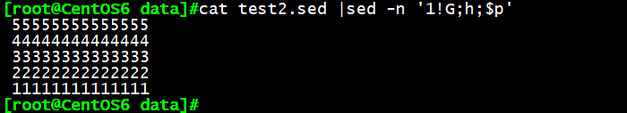

一、模式空间与保持空间：
我们知道sed工作机制是每次读取一行文本至模式空间（pattern space）中，在模式空间中完成处理，将
处理结果输出至标准输出设备；在模式空间中处理一行内容后会继续处理下一行，那么对于处理过的行可
能还有其他的处理，因此可以把处理过的行传送至一个叫保持空间（hold space）中，然后在后续的处理中
再次传送回模式空间中。这就类似加工车间和仓库的概念，好比模式空间是加工车间，保持空间就是仓
库，不过这里的仓库存储的都是些半成品的产品。
二、sed高级用法：
Sed工具支持一些高级的命令来运用到保持空间中，这些高级命令有：
1 | P：打印模式空间开端至\n内容，并追加到默认输出之前 |
三、示例分析：
以下我们均以该文档为例：

例1：cat test2.sed |sed ‘G’
解析：由于保持空间初始默认为空，所有将空行追加到每行的模式空间中输出，等同在每行的
后面添加一个空行。

例2：cat test2.sed |sed ‘g’
解析：g和G的区别在，g为覆盖模式空间，G为追加至模式空间，由于g默认为空，将每行的模式空间都覆
盖为空行输出，所以表现为5个空行。

例3：cat test2.sed |sed ‘$!d’
解析：$表示尾行，$!d则表示除了尾行都执行删除。
例4：cat test2.sed |sed ‘n;d’
解析：n将第一行读入模式空间输出，并将下一行即第二行覆盖至模式空间并删除，如此循环，最终表现为
只显示文本的奇数行。
例5：cat test2.sed |sed ‘N;D’
解析：N将第二行追加至第一行的模式空间中，D删除模式空间内的第一行；对第二行执行命令，将第三行追加至第二行的模式空间内，并删除模式中的第一行；如此循环，最后只输出最后一行文本。
例6：cat test2.sed |sed ‘$!N;$!D’
解析:’$!N;$!D’即对文本中除了最后一行支持’N;D’操作，由例外5可知，除了最后一行执行’N;D’操作，得出
结果为只输出倒数第二行，最后一行文本不处理，默认输出，所有最后结果输出倒数两行的文本。

例7：cat test2.sed|sed -n ‘n;p’
解析：对第一行执行操作，n选项将第二行覆盖至模式空间，在第一行和第二行的默认输出后追加打印出来，-n取消默认输出，如此循环，最后得出文本的偶数行。

例8：cat test2.sed|sed -n ‘1!n;p’
解析：与例7相比，例8为对除了第一行的其他行执行例7的操作，则最后的结果也为得出文本的奇数行。
例9：cat test2.sed |sed ‘/^$/d;G’
解析：^$为表示地址定界匹配到的空行，d将空行删除，G在每行的文本后添加一个空行；最后的输出结果即：删除文本内的空行，并在每行后追加一行空行。

例10：cat test2.sed |sed ‘1!G;h;$!d’
解析：1!G表示除了第一行，都执行将保持空间的内容追加至模式空间并输出，h命令使上一个模式空间内容将G覆盖，最后$!d只保留对最后一行的执行结果，具体表现为：
对第1行只进入模式空间默认输出，第2行将上一个模式空间内容（即第1行文本）覆盖至保持空间，共同进入模式空间（包含第2至1行文本）并输出；第3行将上一个模式空间内容（即第2至1行文本）覆盖至保持空间，共同进入模式空间（包含第3至1行文本）并输出；如此循环…….对第5行将上一个模式空间内容（第4至1行）覆盖至保持空间，共同进入模式空间（包含5至1行）输出；最后$!d除了最后一行的其他行的模式空间内容都删除，最后只留最后一行的执行结果，即将文本倒序输出。

例11：cat test2.sed |sed -n ‘1!G;h;$p’
解析：与例10相比，最后的$p只打印最后一行的模式空间内容（第5至1行），-n取消所有默认输出，得出的结果与例10相同，倒序将文本输出。
